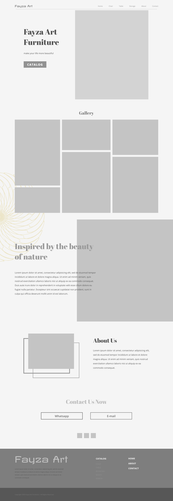
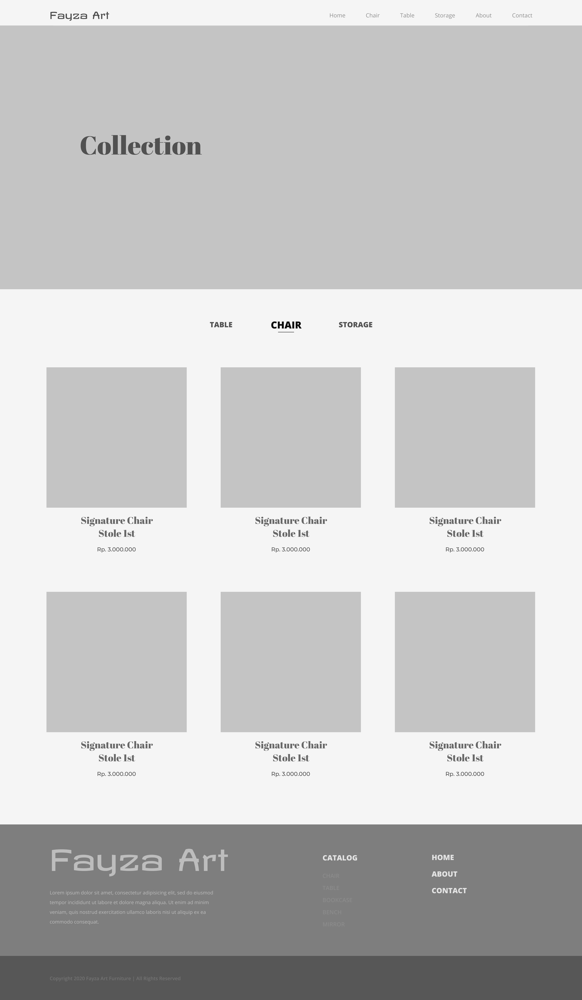
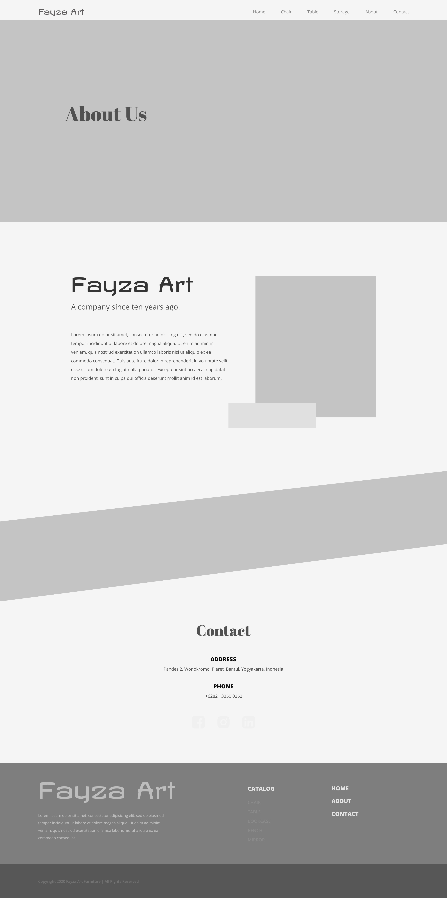
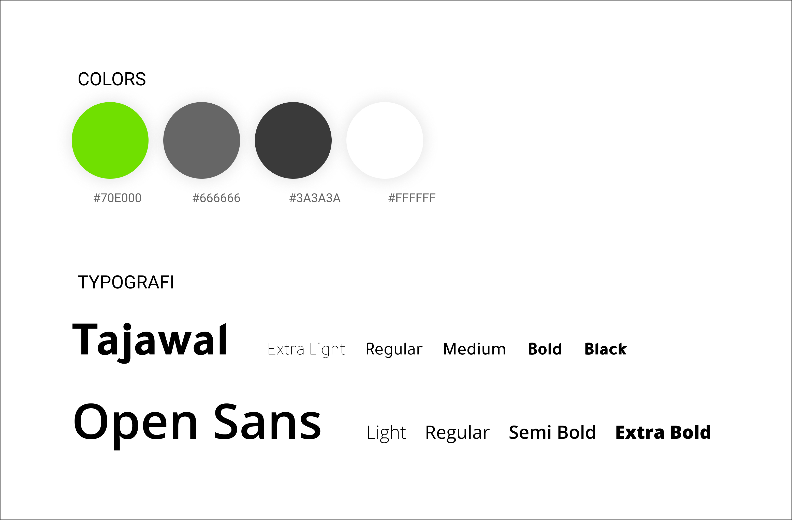

Fayza Art Furniture (Exploration)
UI Designing & Front-End Development

Fayza Art Furniture merupakan sebuah toko online yang menjual berbagai produk furnitur atau mebel. Dalam perkembangannya, usaha furnitur mengalami peningkatan permintaan sebanding dengan meningkatnya jumlah penduduk. Dalam studi kasus ini, saya meng-explore User Interface desain yang saya implementasikan ke dalam sebuah baris kode Front-End.
PERMASALAHAN
Seiring dengan meningkatnya penduduk, permintaan furnitur juga semakin meningkat. Akan tetapi terdapat masalah lainnya, yaitu user tidak tahu dimana, harga, dan bentuk dari furnitur tersebut.
Dengan di ciptakannya website atau toko online, user tidak perlu mendatangi lokasi toko furnitur, tetapi hanya dengan mencari di google dan memsannya.
WIREFRAME
1. Home

2. Products

3. About

ELEMEN

MOCKUP